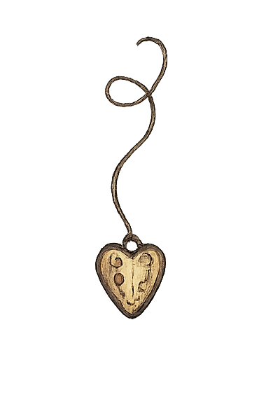
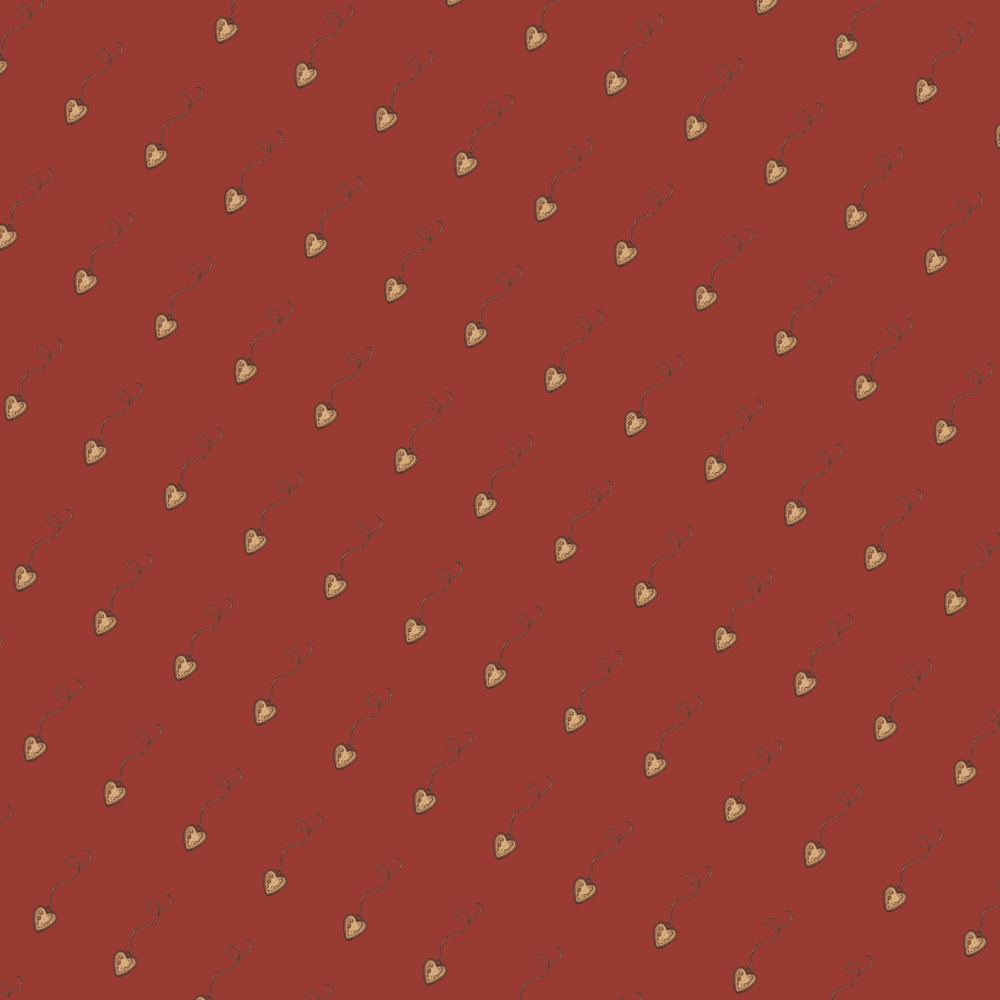
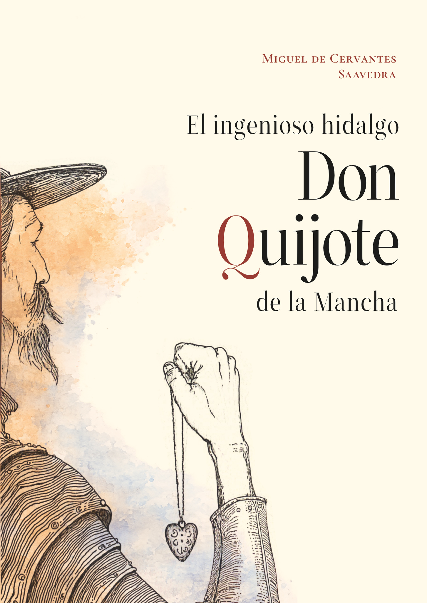
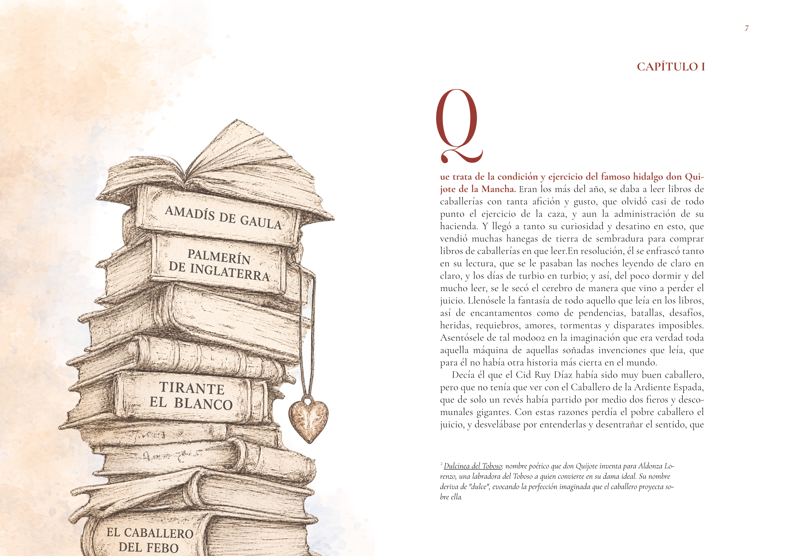
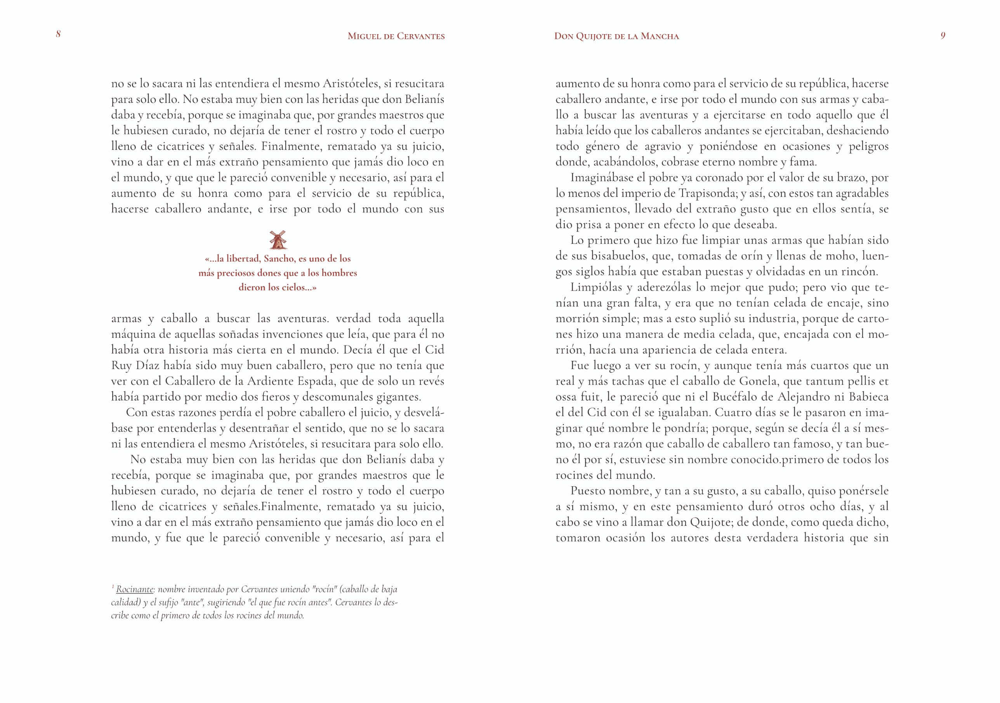
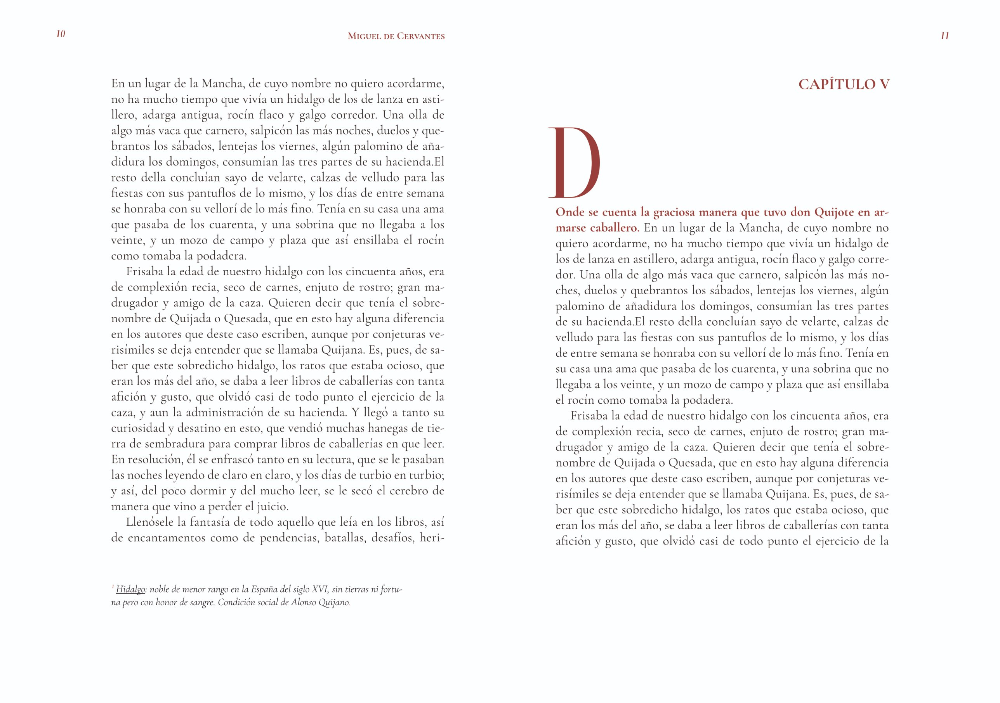

Parte 1 de 3
La cubierta
El título en tres niveles y la Q en rojo, que enlaza con el colgante. Tapa dura de cartón compacto, forrada con estucado mate de 170 g y plastificado mate antiarañazos.
Desliza para ver el libro
El título en tres niveles y la Q en rojo, que enlaza con el colgante. Tapa dura de cartón compacto, forrada con estucado mate de 170 g y plastificado mate antiarañazos.
La misma jerarquía en vertical, para reconocerlo en la estantería. Encuadernación cosida, que permite abrir el libro sin forzarlo, con cabezada en el lomo.
Un símbolo propio para lo único a lo que don Quijote nunca renuncia: el amor. Impresión en CMYK. Interior en papel offset ahuesado de 80 g y guardas impresas en rojo que continúan el sistema visual.
Diseño editorial de El ingenioso hidalgo don Quijote de la Mancha y desarrollo de su presentación web: un modelo 3D interactivo que muestra cubierta, lomo y contracubierta sincronizado con el scroll.
Libro · El concepto
Las ediciones del Quijote suelen apoyarse en la iconografía de la lanza, los molinos o Rocinante. Este diseño parte de otra lectura de la obra: el amor como lo único a lo que don Quijote nunca renuncia.
Para representarlo se crea un colgante de corazón, dibujado a tinta junto al hidalgo, que funciona como hilo conductor del sistema. Aparece en la mano del personaje en la cubierta, se enlaza con la Q roja del título, reaparece a menor escala en la contracubierta y se repite como estampado sobre el rojo del proyecto en las guardas.
El título se organiza en tres niveles con ZT Neue Ralewe, acompañada de Cormorant Garamond. El lomo repite la misma jerarquía en vertical y cierra con el sello Tappiz, como en una colección.


Libro · El interior
La maqueta se construye sobre una proporción ternaria con márgenes progresivos: 15 mm en el interior, 21 en la cabeza, 30 en el exterior y 42 en el pie. El texto va en Cormorant Garamond, justificado y con partición de palabras para mantener un gris tipográfico uniforme.
Cada capítulo se abre con una capitular roja de gran tamaño y la primera frase en rojo y negrita. Las cornisas llevan el autor y el título en versalitas rojas, y los folios van en cursiva.
Como apoyo a la lectura, las notas al pie explican en cursiva términos de la época como hidalgo, Rocinante o Dulcinea, y las citas destacadas se separan del texto en rojo, acompañadas de un pequeño molino.
El colgante es un dibujo propio y la pieza de partida de las ilustraciones. A partir de él, el resto, como la pila de libros de caballerías, se desarrolló con apoyo de IA, manteniendo el mismo trazo y la misma paleta.
Las imágenes generadas no salieron listas para usar. En la pila de libros, los títulos de los lomos aparecían con errores, como «Amaiys de Gaula» en lugar de Amadís de Gaula o «Ell'aballero del Fedo» en lugar de El Caballero del Febo, y una de las versiones perdió la acuarela del resto del proyecto. Se corrigieron los títulos, contrastándolos con los libros de caballerías que cita Cervantes, y se recuperó el estilo para que la ilustración fuera coherente con la cubierta.




Libro · Producción
El libro está planteado en formato cerrado de 135 × 190 mm y 896 páginas, en tapa dura con encuadernación cosida. La cubierta va en estucado mate de 170 g con plastificado mate, el interior en offset ahuesado de 80 g y las guardas, impresas.
Con 896 páginas, 56 cuadernillos de 16, en offset de 100 g, el lomo superaba los 60 mm. Por eso se bajó el interior a offset ahuesado de 80 g, más ligero y habitual en novelas extensas, que lo deja en torno a 50 mm.
Las artes finales se preparan en CMYK con 3 mm de sangrado y un perfil de color para cada papel: Coated FOGRA39 para la cubierta, en estucado, y PSO Uncoated v3 (FOGRA52) para el interior, en offset sin estucar, donde la tinta se absorbe más.
Web · El problema
En la venta online, un libro se presenta casi siempre con una única imagen plana de la cubierta. Se pierde la información que el lector obtiene al coger el ejemplar en una librería: el grosor, el lomo, el acabado del papel y el texto de la contracubierta.
El objetivo del proyecto es trasladar esa experiencia física a la pantalla, para que el producto pueda examinarse por todas sus caras sin salir de la página.
Web · La solución
El libro se construye como un objeto 3D con las proporciones reales del diseño y las artes finales aplicadas como texturas. Gira con el scroll y también puede arrastrarse con el dedo o el ratón.
Cada cara se acompaña de su explicación, que aparece cuando esa cara está de frente. Así el objeto y la información se leen a la vez, sin que el texto tape el libro durante el giro.
El mismo modelo sirve para cualquier producto con caras impresas, como cajas, packaging, latas o tarrinas. Cambiando medidas, imágenes y textos se convierte en la ficha de producto de un catálogo o una tienda online.
Web · Prueba con usuarios
Se mostró la web a varias personas sin explicación previa y se observó cómo la usaban, sin intervenir.
El texto avanzaba demasiado rápido y los usuarios no identificaban que debían leerlo. Se rediseñó el ritmo para que cada texto permanezca visible mientras el libro está de frente y solo se desvanezca antes del siguiente giro.
Varios usuarios intentaron girar el libro arrastrándolo con el dedo en lugar de hacer scroll. Se añadió el giro por arrastre, con retorno automático a su posición al soltar.
Web · Desarrollo
La primera versión se hizo en Spline, que se descartó por la marca de agua del plan gratuito, las sombras pixeladas y el peso del archivo. El modelo final está desarrollado en Three.js, que da control total sobre la geometría, la luz y el rendimiento.
El lomo se modela como una sola pieza en forma de U que dobla por las esquinas, con la tapa completa, contracubierta, lomo y cubierta, como una única textura. Así la imagen es continua y no hay juntas visibles entre piezas.
Una sombra de contacto que gira con el libro lo apoya sobre la superficie para que no parezca superpuesto, y el libro gira siempre sobre su eje vertical, sin inclinarse.
La tipografía de la cubierta se incrusta en la web como fuente propia, para que el título se vea igual en cualquier dispositivo aunque no la tenga instalada.
La cubierta, los interiores y el sistema visual se trabajaron en Affinity Publisher; el colgante, a mano; el resto de ilustraciones, con apoyo de IA, y el tratamiento de imagen, en Affinity Photo. La web está hecha en HTML, CSS y JavaScript, con IA como apoyo en el desarrollo.
Web · Accesibilidad
El contraste de todos los textos cumple el mínimo de 4,5:1 que exige el nivel AA.
Los lectores de pantalla reciben una descripción del libro 3D, y si el 3D no carga se muestra una imagen de respaldo con su propio texto alternativo.
La web funciona desde 320 px de ancho sin desplazamiento horizontal y respeta la preferencia del sistema de reducir movimiento.